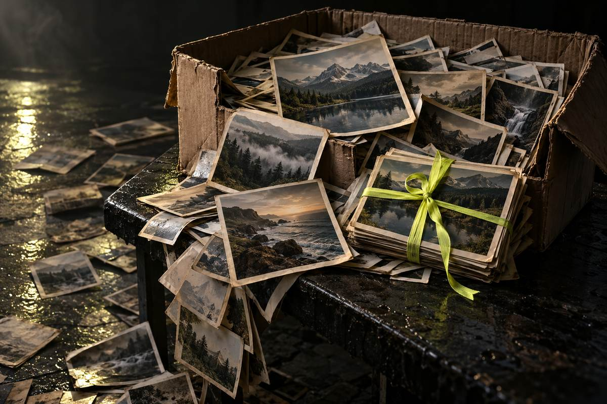
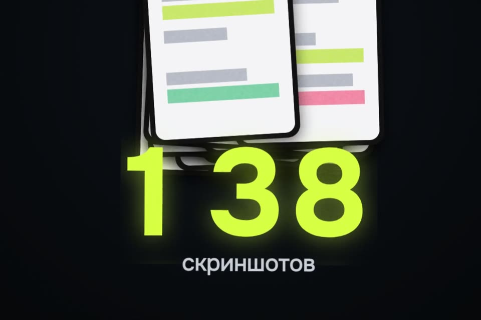

Память заполнена. Где мусор в «Фото»
Обещанные промпт и команды. Сначала считаем, ничего не трогая. Потом складываем найденное в альбом «На удаление». Удаляете вы сами, руками, и ещё 30 дней всё можно вернуть.
- бесплатно
- подсчёт только читает
- сам ничего не удаляет
- 30 дней на возврат
К ролику «Память заполнена» · обновлено 27 октября 2026

Нужен Mac и Терминал. Если включены «Фото iCloud», удаление на Mac удаляет снимок на всех ваших устройствах.
Первый результат за 4 шага

Поставьте osxphotos
Открытая утилита читает медиатеку «Фото» на Mac.
osxphotos (лицензия MIT) отвечает на вопросы: сколько скриншотов, где возможные дубли, сколько серий, какие видео самые тяжёлые. Подсчёт ничего в медиатеке не меняет. Проще всего поставить через pipx:
brew install pipx
pipx ensurepath
pipx install osxphotos
osxphotos --versionЕсли macOS спросит доступ Терминала к «Фото» или к файлам, разрешите. Если не спросит и выдаст ошибку доступа: Системные настройки → Конфиденциальность и безопасность → Полный доступ к диску → Терминал. Включаете вы сами, после работы можно выключить.
osxphotos --version печатает номер версии.
Посчитайте, только чтение
Каждая команда печатает одно число и ничего не меняет.
# всего фото и видео
osxphotos query --count
# скриншоты
osxphotos query --screenshot --count
# возможные дубли (совпали дата, размер и разрешение; в счёт входят все копии)
osxphotos query --duplicate --count
# серии (ключевые кадры; сколько лишних кадров внутри, видно в osxphotos info)
osxphotos query --burst --count
# видео тяжелее 100 МБ
osxphotos query --only-movies --min-size 100MB --countОбщая сводка по медиатеке, тоже только чтение: osxphotos info. В блоке Bursts строка non-selected images показывает, сколько лишних кадров лежит в сериях.
Пять чисел: всего, скриншоты, возможные дубли, серии, тяжёлые видео. По ним видно, что занимает место: мусор или видео.
Сложите найденное в альбом «На удаление»
Команды только добавляют фото в альбом. Из медиатеки ничего не удаляется.
Если альбома нет, он создастся. Фото остаются на своих местах. Перед запуском откройте «Фото». При первом запуске macOS спросит, можно ли Терминалу управлять «Фото»: ответьте «Разрешить».
osxphotos query --screenshot --add-to-album "На удаление" --quiet
osxphotos query --duplicate --add-to-album "На удаление" --quiet
osxphotos query --burst --add-to-album "На удаление" --quiet
osxphotos query --only-movies --min-size 100MB --add-to-album "Тяжёлые видео" --quietВ «Фото» появились альбомы «На удаление» и «Тяжёлые видео». Медиатека не изменилась.
Удалите сами и знайте, как вернуть
Удаляете вы, руками, в приложении «Фото».
- Откройте альбом «На удаление» в «Фото», пролистайте его глазами и снимите выделение с того, что жалко.
- Выделите остальное и удалите. В «Фото» на Mac удаление из альбома может просто убрать снимок из альбома; чтобы удалить из медиатеки, жмите ⌘ + Delete (Command + Delete).
- Удалённое уходит в «Недавно удалённые» и лежит там 30 дней. Передумали — откройте этот альбом и нажмите «Восстановить». Через 30 дней фото удалятся насовсем, место освободится сразу, если очистить «Недавно удалённые» вручную.
Источник про 30 дней и «Фото iCloud»: поддержка Apple, восстановление удалённых фото.
Лишнее лежит в «Недавно удалённых». 30 дней его можно вернуть кнопкой «Восстановить».
Или промпт для Claude Code
Claude Code работает в Терминале и сам вызывает osxphotos. Вставьте текст целиком.
Помоги найти мусор в медиатеке «Фото» на моём Mac.
1. Если нет osxphotos, предложи поставить его через pipx и подожди моего «да».
2. Сначала только читай. Посчитай и покажи таблицей: всего фото и видео,
скриншоты, возможные дубли, серии и лишние кадры в них, видео тяжелее
100 МБ, и сколько всё это весит в ГБ. Используй osxphotos query --count,
osxphotos info и osxphotos query --json только для подсчёта размеров.
Не выводи и не сохраняй имена файлов, места съёмки, лица и превью.
Покажи год самого старого скриншота.
3. Скажи честно, что занимает место больше всего: мусор или видео.
4. Спроси меня, что складывать в альбом «На удаление». Делай только
osxphotos query ... --add-to-album "На удаление" --quiet.
Никогда ничего не удаляй, не меняй и не экспортируй.
Удалять буду я сам в приложении «Фото».
5. В конце напомни: дубли лежат в альбоме обеими копиями, серии надо
разобрать руками, удалённое 30 дней лежит в «Недавно удалённых».Таблица с подсчётом и весом в ГБ, честный ответ, что занимает больше места, и вопрос, что складывать в альбом. Удалять Claude ничего не будет.
Что вышло в ролике
У меня в ролике вышло так: 1 077 фото и видео, 138 скриншотов, одна пара дублей, две серии на 11 кадров. Весь этот мусор весил около 216 МБ. Зато видео заняли 5,4 ГБ из 7,1, три четверти места, и одни только 10 роликов тяжелее 100 МБ весили 1,9 ГБ. У вас цифры будут свои: сначала посчитайте.
Без Mac
На iPhone есть встроенные «Дубликаты»iOS 16 и новее
«Фото» → Коллекции → пролистать вниз → Утилиты → «Дубликаты» → «Объединить».
Телефон оставит одну копию лучшего качества, остальные уйдут в «Недавно удалённые», и их тоже можно вернуть 30 дней. Нужна iOS 16 или новее; альбом появляется, только если телефон нашёл дубли. Скриншоты там же: Коллекции → Типы медиафайлов → Снимки экрана.
Если застряли
osxphotos пишет ошибку доступа
Системные настройки → Конфиденциальность и безопасность → Полный доступ к диску → Терминал. Включаете вы сами, после работы можно выключить.
Удалил из альбома, а фото осталось в медиатеке
В «Фото» на Mac удаление из альбома может просто убрать снимок из альбома. Чтобы удалить из медиатеки, жмите ⌘ + Delete (Command + Delete).
Удалил лишнее
Откройте альбом «Недавно удалённые» и нажмите «Восстановить». Удалённое лежит там 30 дней.
Удалил, а место не освободилось
Удалённое 30 дней лежит в «Недавно удалённых». Место освободится сразу, если очистить этот альбом вручную.
Ограничения
- Команды и промпт работают только на Mac. На iPhone есть встроенные «Дубликаты».
- Дубли osxphotos ищет по совпадению даты, размера и разрешения, это возможные дубли. В альбом попадают обе копии пары.
- Серии попадают в альбом одной стопкой, нужные кадры оставляете руками.
- С «Фото iCloud» удаление на Mac удаляет снимок на всех устройствах.
- Цифры из ролика — медиатека автора. У вас будут свои.